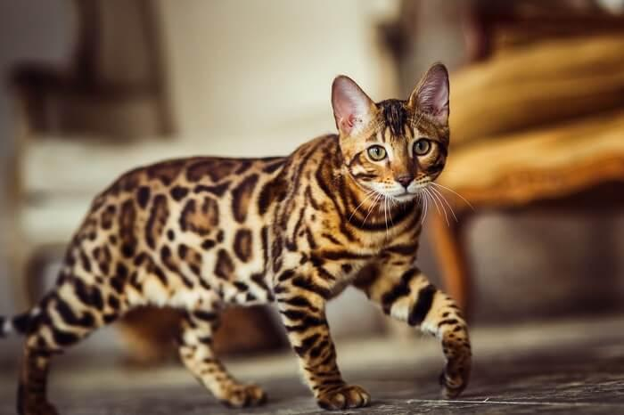

Pets' Library
Filter:

HUSKY
Alaskan Malamute
10 – 14 yrs
Alaska
Loyal
The Alaskan Malamute is a large breed of dog that was originally bred for its strength and endurance, to haul heavy freight as a sled dog, and as a hound. It is similar to other arctic breeds such as the husky, the spitz, the Greenland Dog, Canadian Eskimo Dog, the Siberian Husky, and the Samoyed.
SHORTHAIR
European Shorthair
15 – 20 yrs
Europe
Adaptive
Although its wide range of colors and patterns make this breed stand out from most others, the European Shorthair cat is commonly considered to be in the average or medium category of height and weight, although adult males can get large.
LIONHEAD
Lionhead rabbit
7 – 10 yrs
Belgium
Energetic
The lionhead rabbit is a petite breed with a distinctive fluffy wool mane similar to that of a male lion. Their body is compact, but their erect ears are rather large at around 2 to 3 inches long. This type of rabbit originates in Belgium and is believed to be a cross between a Swiss Fox and a Netherland dwarf rabbit. They require daily interaction and a moderate amount of maintenance. They need a varied diet and housing that gives them room to exercise.

BENGAL
Bengal cat
10 – 16 yrs
US
Playful
The Bengal is a sleek, muscular cat with a wild appearance, enhanced by the bold marbling and spotting on their thick, luxurious coat. Despite their striking appearance, physically there is nothing extreme about their build or structure, as this is a well-balanced cat without any exaggerated features, smallish ears, wedge shaped head, neat paws and athletic outline.

HAMSTER
Syrian hamster
2 – 3 yrs
Syria
Friendly
The Syrian hamster, also known as the golden hamster, is among the most popular choices for small pets. It's generally easy to tame, fun to watch, and fairly low-maintenance, making it a good pet for beginners. These hamsters come from arid regions of northern Syria and southern Turkey.